A Thematic Photo Essay.
formal (adjective) /fɔː.məl//ˈfɔːr-/: public or official. In development, the formal sector refers to "official" and recognized work and existence. This includes set level of work, agreed wages,and occasionally pension and social security rights given by the government. Those living in the formal sector have set housing rents, land rights, access to water, electricity and all other basic needs.
informal (adjective) /ɪnˈfɔː.məl//-ˈfɔːr-/: not formal. The informal sector refers to unrecognized work and life. Those who are unregistered workers, self-employed or living in informal settlements (more commonly known as slums). The informal economy accounts for sometimes as much as two thirds of a developing country's economy. 60% of Nairobi's residents live in informal settlements.
Photographer's Note: When discussing the interaction between the formal and informal sectors, academics tend to use the word "interface". There are competing theories which, as is often the case in academia, oversimplify and strip a subject of its complexity and humanity. The informal sector is normally discussed either as being exploited and therefore created and perpetuated by the formal sector, or that the informal sector is merely a means to an end, an inevitable and necessary working part of the system that will eventually improve on its own. I found the truth to lie somewhere between...in the gray. Working in Mathare got me interested in this gray area. This gray area which is made up of living, working people. I interacted with so many creative individuals who were involved in not just one but multiple entrepreneurial/community endeavors in and outside of the settlement, working in the formal and informal sectors, that I wanted to put a human face to the gray area. My photo essay is a look into the lives of a few in this dynamic community between worlds...
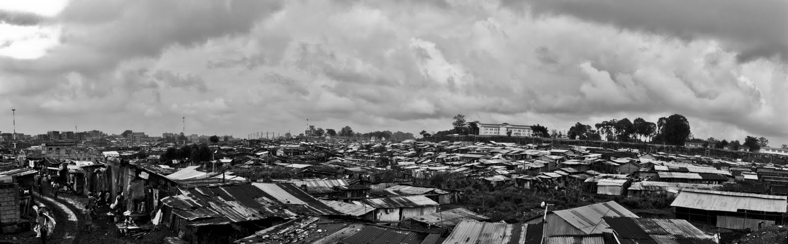Mathare Valley stretches across three miles of Eastern Nairobi, bounded on the west by Thika Road and Kariobangi on the east. As is common in many of Nairobi's informal settlements, the population of Mathare is disputed, but generally estimates sit between 300,000-600,000. Population is politics: high counts can bring attention from international bodies like the UN and NGOs like Oxfam, and can put pressure on the government to provide basic services like water and electricity.
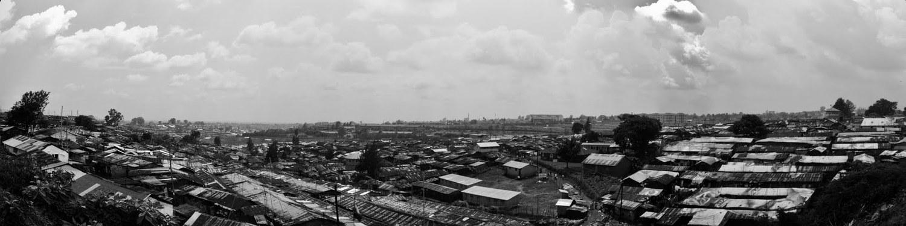Kibera has received international attention and become one of the better known informal settlements in the world because of its high population count. Some organizations such as the UN previously claimed a population as high as one million people. Controversy arose last year when the 2009 Kenya Population and Census published Kibera's first official population at a meager 170,000 people.
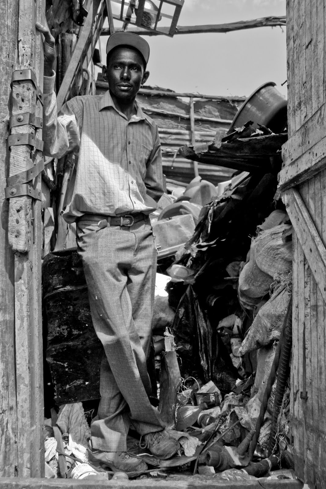Kennedy Kariuki, 29, stands in front of recyclables and reusables collected and sorted by his youth group, Kibichoi. Kibichoi is one of many self-help youth groups in Mathare involved in waste management. Households are charged a minimal monthly fee to have their garbage collected (depending on the home, anywhere between 40-200 shillings/50 cents-$2.25 USD a month) once a week. Kibichoi then transfers it to an agreed dumping site, where City Council has agreed to collect it. However, they have been rather notorious for not showing up for weeks at a time, sometimes even months.
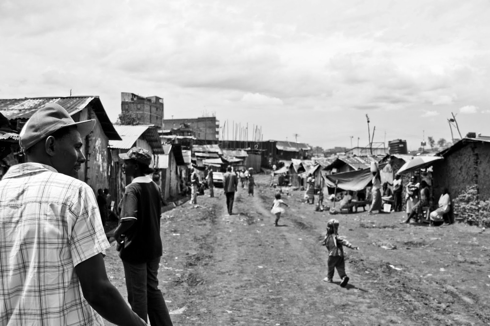Kennedy walks through Mathare 10 with fellow UCLTS members and the Vitimbi comedy sketch group from Kenya Broadcasting Corporation--who came to Mathare to film a sanitation skit for UCLTS. Urban Community Led Total Sanitation is a grassroots project aimed at creating awareness of sanitation and health issues in Mathare, and is another initiative Kennedy participates in. "I like to keep busy".
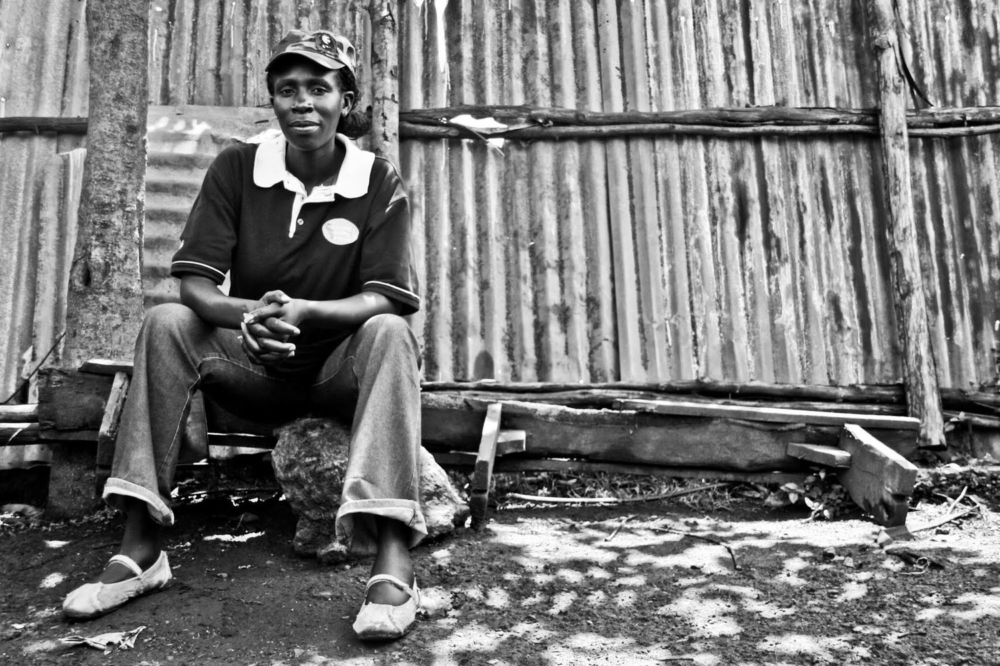Josephine Otieno, better known as J-Lo in Mathare 10, is employed by Community Cleaning Services, a social business enterprise started by American cleaning company SC Johnson. Last year J-Lo also became involved in the UCLTS project, initiated by CCS and funded by Plan International. She is now volunteering as a community mobilizer and researcher for UCLTS. J-Lo was 8 and a half months pregnant when this photo was taken. She said calmly, "Pregnancy is no excuse to be idle. I will work until the baby comes!" Baby Ricardo arrived three weeks later.
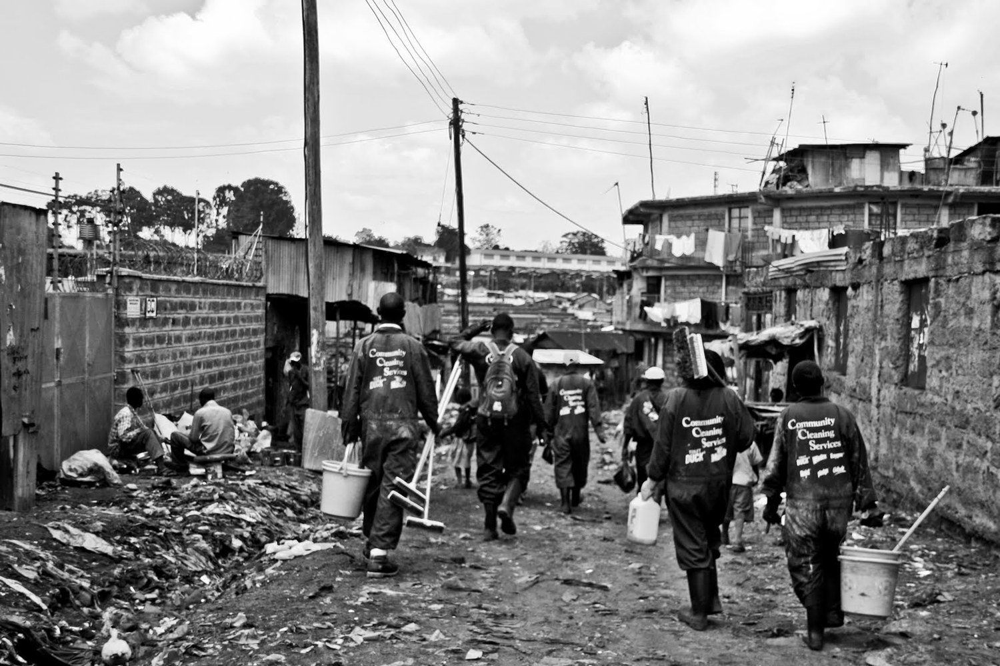Community Cleaning Service workers walk into Mathare 10 on World Toilet Day, an event sponsored by Plan International, City Council, Amnesty, and a number of other NGOs to spread awareness on sanitation issues. The goal of the day was to clean as many toilets (free of charge) as possible. Out of an estimated 240 shared toilets in Mathare 10 (servicing hundreds of thousands of people), they cleaned an impressive 131. CCS is a Base of Pyramid (BoP) social business enterprise launched by American cleaning product company SC Johnson in 2005. They offer entrepreneurial opportunity to Mathare residents and affordable cleaning services to the community.
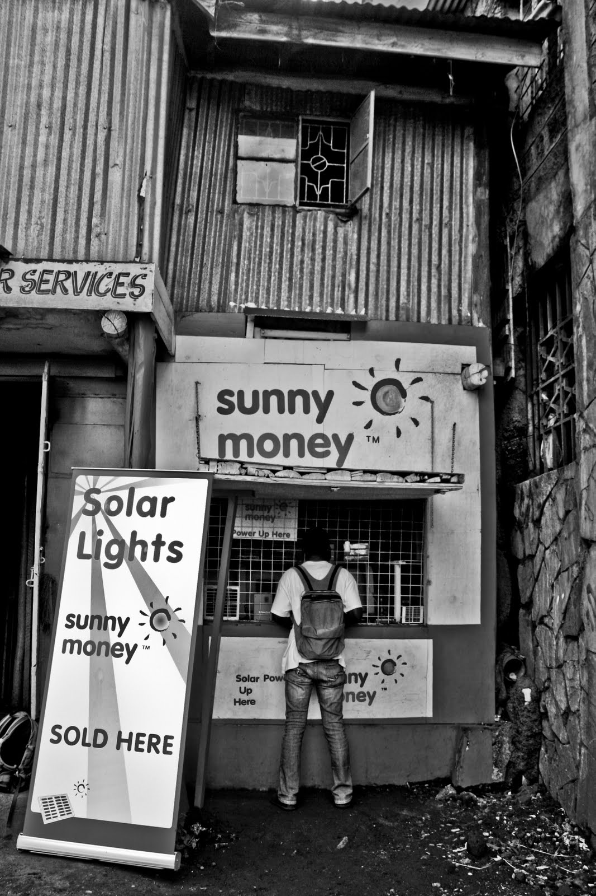Especially in Kibera, there are many formal pockets within the informal settlement itself. Businesses have attempted to tap into the lower income market by offering products in slum areas. Sunny Money is a microfranchise founded by SolarAid that sells solar lamps, radios and cellphone charges to rural communities in East Africa. Their store, located on the periphery of West Kibera, is an experiment in the urban setting. It has struggled to get off the ground, as the prices are too high for most Kibera residents and also the amount of power offered by Sunny Money's solar devices has not been sufficient for the urban community.
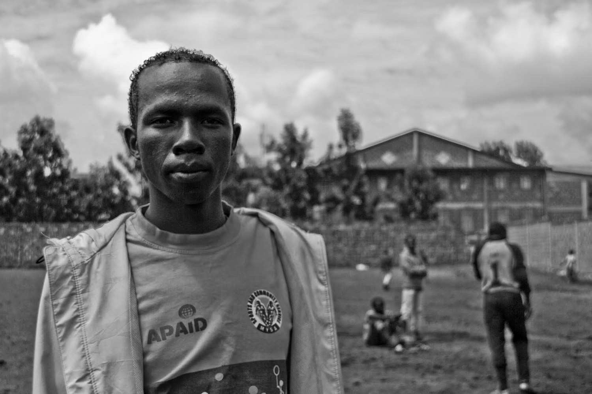Many young people in the informal settlements are not only making ends meet but are also finding time to volunteer with local institutions. Frederick Wambua, 23, has been a volunteer with the Mathare Youth Sports Association for six years--splitting his time between working in their community library and coaching U12 boys soccer. Because he does not get paid, he works various other odd jobs--reselling used items and working the occasional matatu (minibus) route.
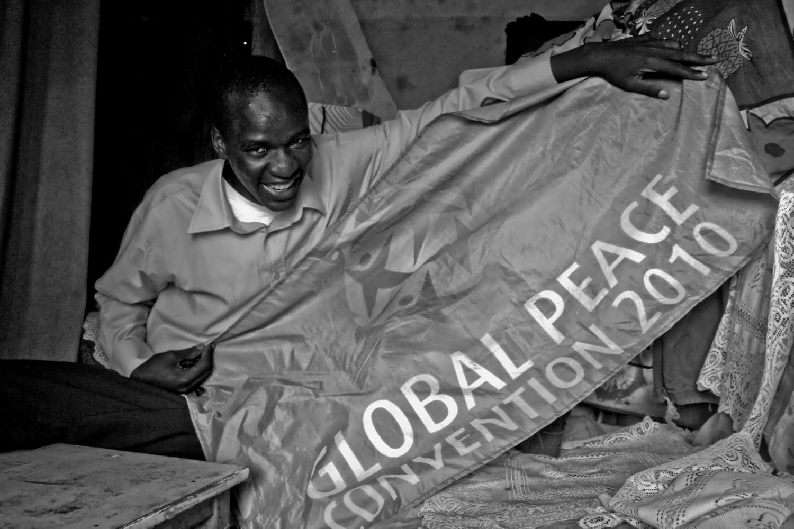Recent graduate of the NairoBits ICT Multimedia program, Francis Sakwa of Mathare 10 is proud to have work coming his way, bit by bit. He has already designed websites for two different organizations. Here he proudly displays a banner he recently designed. NairoBits, founded in 1999, is a youth-based organization that provides ICT training and computer access to Nairobi's slums. They opened a small cyber cafe and community space in Mathare 10 where Francis checks his email.
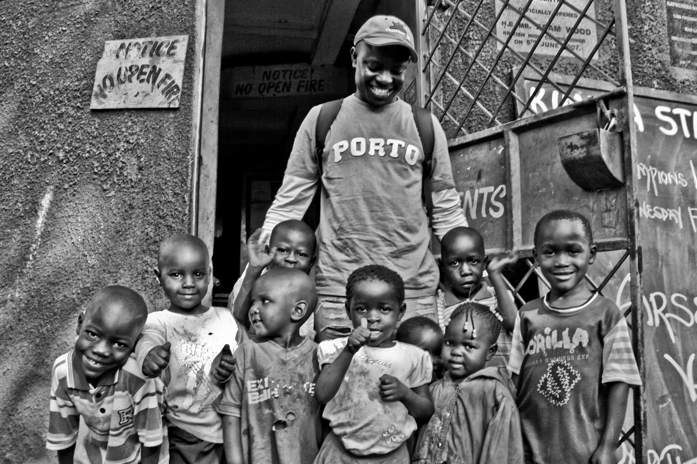Community Based Groups, Self-Help groups and any local NGO will tell you the importance of receiving outside funding for survival of an organization. These groups also must seek approval and formal recognition by City Council. 8 years ago, Vincent Kegobe saw the need to get kids involved in sports. His connection with large NGO Vision Africa has been crucial to his success. His organization, Mpira Mtaani, now has over 2,500 kids involved and 136 registered soccer teams. He is paid wages by Vision Africa. Mpira Mtaani now has an afterschool program, helping kids with their homework and teaching AIDS awareness. Kegobe has also spearheaded environmental projects and recently received funding for an ICT program for the kids.
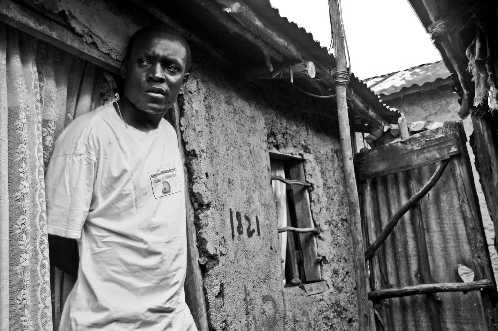Richard Amwayi, 31, looks out from his home in Kibera. Richard is one of five founders of KCYP (Kibera Community Youth Program), a CBO started in 2000 as a debate club that later evolved into a theatre group. KCYP is supported by various organizations and is paid to perform outreach skits aimed at creating awareness of issues like AIDS and SGBV (Sex Gender Based Violence).
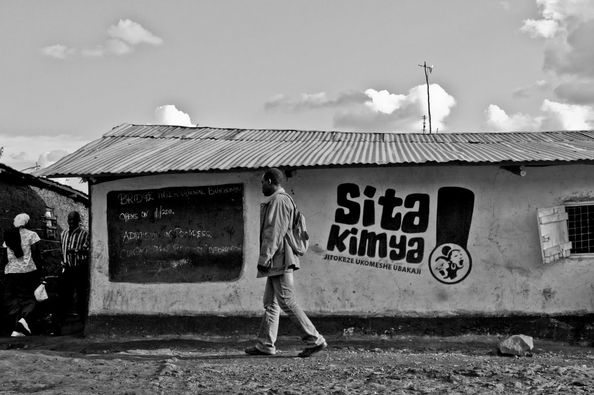Richard walks past one of hundreds of Sita Kimya campaign advertisements on his way from home to the KCYP office. Sita Kimya ("I will not keep quiet") is a locally-made film funded by USAID about SGBV in Kibera. 6 different theatre groups tried out for parts, and Richard landed the lead role.
Richard celebrates with his fellow Sita Kimya cast members at the premier screening at Nairobi National Theatre on December 9, 2010. Kibera-based dance and theatre youth groups performed. Kiberans and non-Kiberans alike came to the event. The film will be shown throughout Kenya for the next three months.